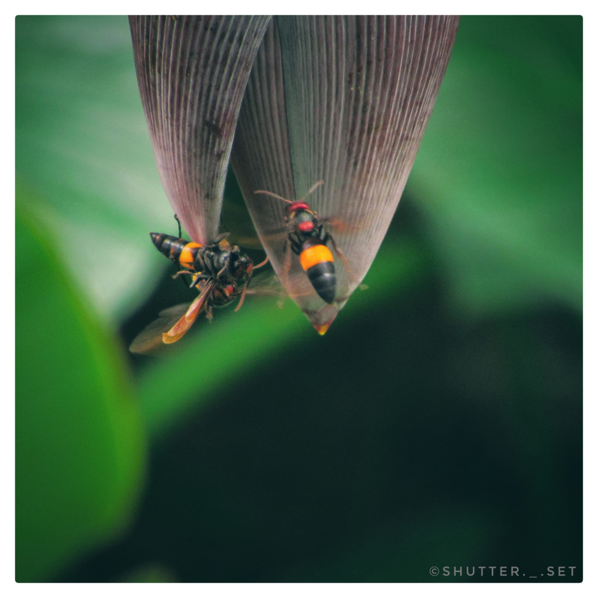

1 / 10
Owl
2 / 10
Owl
3 / 10
Owl
4 / 10
Hornbill
5 / 10
Hornbill
6 / 10
Sunbird
7 / 10

Honeybees
8 / 10
Pinches
9 / 10

Peacock
10 / 10

Seagulls
Wildlife photography is all about capturing animals in their natural habitats. The animals are often photographed in action, such as eating, fighting, or in flight. Alternatively, more static portraits may be used to show detail of the animal or to depict it in its environment. Captive or controlled animals are often photographed instead of true wild specimens, although it is arguable as to whether this constitutes true wildlife photography.
The world's largest photography organizations, the Photographic Society of America, the Fédération Internationale de l'Art Photographique and the Royal Photographic Society, have agreed on a definition for nature and wildlife photography that will be applied to photography competitions.[2][3] The techniques of wildlife photography differ greatly from those used in landscape photography. For example, in wildlife photography wide apertures are used to achieve a fast shutter speed, freeze the subject's motion, and blur the backgrounds, while landscape photographers prefer small apertures. Wildlife is also usually shot with long telephoto lenses from a great distance; the use of such telephoto lenses frequently necessitates the use of a tripod (since the longer the lens, the harder it is to handhold). Many wildlife photographers use blinds[4] or camouflage.
Out of almost all photographic genres, wildlife photography took the longest to develop - the first wildlife photograph was taken in 1906 for National Geographic, almost 70 years after the oldest photographic image ever, because it required faster lenses and higher sensitivity of the film that were unavailable until that point. Today, it represents the largest “section” of nature photography, and it’s dedicated to wildlife and capturing animals in their natural habitats - while they’re eating, fighting or just being. For this type of image-making, it is crucial that the photographer gets to know even the smallest details of an animal’s behavior and habits, as it is very important not to harm the subject in any way whatsoever. Because both the photographer and the animal could end up in danger during the shooting, or because endangered plant species could be destroyed by reckless image takers, there are certain rules imposed to prevent such situations that everyone involved in nature photography must follow.
At work, a nature photographer can easily expose his/her subject animal to its predators or prevent it from getting food. They can also accidentally step on a rare flower, which would take years to grow back, or it won’t revive at all. To avoid cases like these, many nature photography associations and their members compiled a set of ethical practices, which protect the well-being of all parties involved in the matter. Apart from the above-mentioned knowledge of the animal behaviors and the fragility of the ecosystem, the ethics insist on the safe and comfortable distance between the man and the animal and encourages the former not to expose themselves while working, in order not to scare the latter. Nature photography is all about respect - of the wildlife, the law, the environment, and fellow photographers, and as long as they follow the rules, they will be able to obtain their images without an issue.